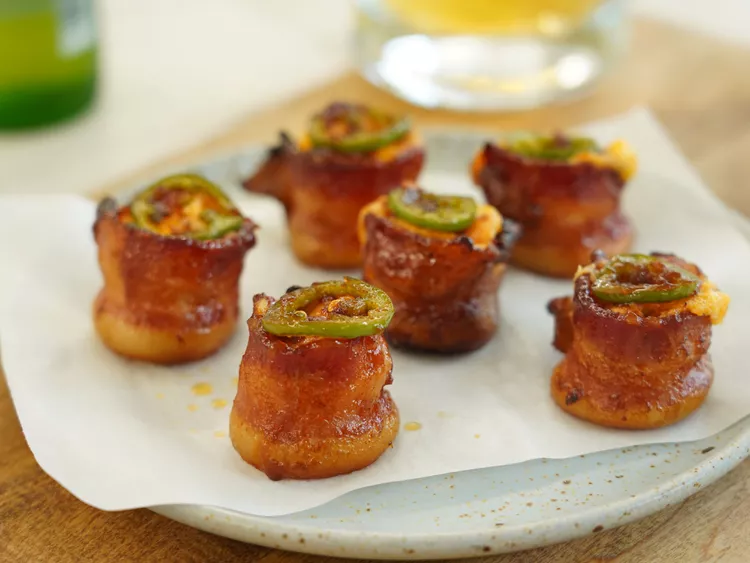

Jalapeno Popper Pig Shots

Description
Edible shot glasses. A combination of salty crisp bacon, caramelized
sausage, and the kick from the jalapeno is just perfect. Serve at your next
football party or get-together.
Ingredients
- 1 lb smoked sausage, sliced about 3/4 - 1 inch thick
- 4 ounces cream cheese, softened
- 1 1/2 cups sharp Cheddar cheese
- 1/2 teaspoon Cajun seasoning
- 2 tablespoons sour cream
- 3 jalapenos, divided
- 1 lb (12 slices) thick cut bacon, cut in half
- 1/4 cup spicy bbq sauce
- 1 tablespoon honey
- 1 tablespoon brown sugar
Steps
- Preheat oven to 190 degrees Celcius
-
Combine cream and Cheddar cheese, Cajun seasoning, and a sour cream in a
bowl. Seed and finely chop 1 jalapeno and add cheese to mixture. Stir
until well combined. Place cheese mixture into a large ziplock bag.
-
Snip the corner of the bag and pipe about 2 teaspoons of cheese mixture
onto each piece of sausage. Wrap each sausage with bacon and place into
mini muffin pan cups. Slice remaining jalapenos into 24 thin slices and
top each “shot” with a slice.
-
Stir together bbq sauce, honey, and brown sugar in a small bowl. Brush
bbq mixture over pig shots and bake until the bacon gets crisp, about 45
minutes.
-
Remove from oven and let cool before serving, 5 to 10 minutes. They will
crisp slightly more after baking.